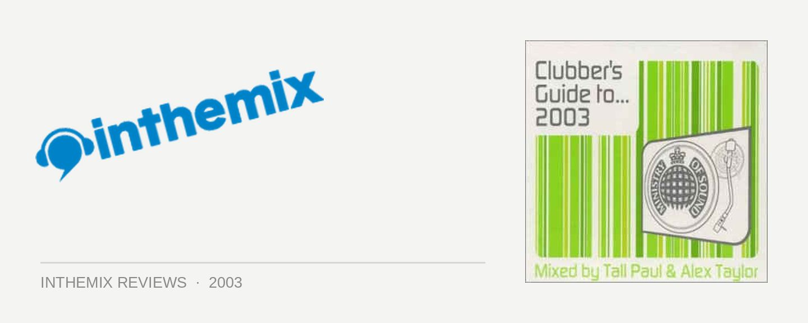

Tall Paul & Alex Taylor - MOS Clubber's Guide to... 2003
(Ministry of Sound)
While the UK Ministry of Sound releases are often accused of being overly commercial, the Australian MOS label has delivered a steady flow of high quality releases since it was established a few years ago, relying on local DJs like Mark Dynamix, Kid Kenobi, and Groove Terminator to deliver the goods. With that in mind, the latest Australian MOS CD, Clubber’s Guide to… 2003, is a bit a peculiar release; while the first mix is put together by British superstar veteran Tall Paul, the second is mixed by local champion Alex Taylor. So how does a local DJ such as Alex Taylor measure up against a renowned DJ of the likes of Tall Paul?
After hearing mixed reports about Tall Paul’s set at the last MOS club tour, I wasn’t really sure what to expect from his CD. While the mixing is competent, it’s not really what you’d expect from a DJ with the status of Tall Paul, and he definitely doesn’t employ any of the impressive tricks or skills that I’ve heard him demonstrate in his live sets in the past. The cheesy house that opens the CD grated on my ears a little, and his mix seems to jump between different genres of music without giving that much consideration to flow.
Nonetheless, his CD contains an assortment of crowd-pleasing tracks that will no doubt make you grin, like the thin-white-duke mix of Felix Da Housecat’s Silver Screen – Shower Scene, as well as a couple of really obvious choices like Who Da Funk’s Shiny Disco Balls. He begins to trance it up on the second half of the CD, which seems to suit the vibe of his mix a little better. He cheeses it up a little (in a wholly acceptable fashion) with tracks like Fire & Ice’s Heart & Mind, yet balances it out with slightly more leftfield choices like Tiesto’s Obsession. On the whole, while competently mixed and professionally executed, Tall Paul’s mix is, dare I say it, a little flat and uninspiring.
While my expectations of Tall Paul’s CD were mixed, I knew to expect nothing less than quality from Alex Taylor’s mix. Wonderfully deep and funky with phat bass and big vocals, Taylor starts the proceedings with the reggae rock mix of Cassius’s The Sound of Violence, and proceeds to move it through the whole spectrum of house music. From soulful choices like Mambana’s No Reason to the more upfront Pressure Cooker from Banda Sanora, Taylor also pushes a progressive groove with Steve Lawler’s mix of DJ Sandy’s Overdrive, and uplifts the listener with Krystal K’s Let’s Get it Right.
Taylor’s mixing is flawless and smooth, and house lovers will no doubt enjoy the solid funk on offer. While it may not be quite as commercially viable as Tall Paul’s CD, Taylor’s mix is still accessible while thankfully steering away from the cheese. Taylor’s mix reminds me why all of the local MOS releases have so far been so well executed; while adhering to the MOS formula by including the latest ‘big choones’, our local DJ’s have brought a high level of musical credibility to the format through skilled mixing and inspired track selection.
While far from an extraordinary must-have release, Clubber’s Guide to… 2003 creates an interesting juxtaposition of the UK MOS approach versus the Australian. While Tall Paul’s mix does a good job of staying within the defined boundaries of a commercial mix CD, Alex Taylor’s mix shows us on the other hand why our local DJ’s deserve respect, and can compete on an international level any day of the week.